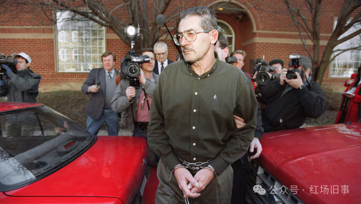
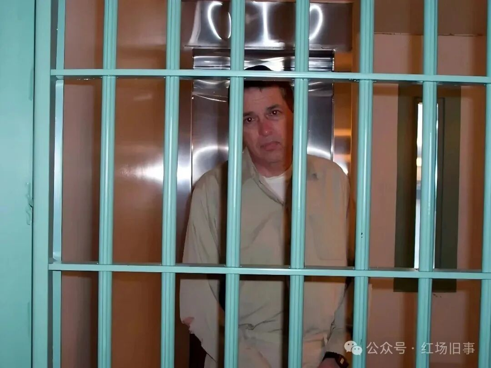

第2期 潜伏军情六处30年，死后葬在莫斯科：那个让英国情报界蒙羞的“红色幽灵”
第1期 戴笠追捕、中统悬赏、日本特高课全程盯梢：那个让三方头痛的“红色谍王”
楔子：2001年弗吉尼亚公园的抓捕2001年2月18日，华盛顿郊区狐石公园。一个穿着普通的中年男人走过木桥，把一包塑料袋包裹的东西藏在天桥下的雪地里。他四处张望了一下，转身往回走。刚走出几十米，一群“游客”突然冲上来把他按倒在地。被按在地上那一刻，他没有挣扎，没有惊慌，甚至挤了挤眼睛，对按住他的FBI特工说了一句：“你们怎么等了这么多年才找到我？”
这个男人叫罗伯特·汉森，56岁，FBI资深反间谍特工。在过去22年里，他向苏联和俄罗斯提供了6000页绝密文件，把美国安插在莫斯科的眼线一个个送进坟墓，换来了140万美元现金和钻石。而他的本职工作，恰恰是抓间谍。
一、潜伏起点：反间谍专家如何变成间谍
汉森1944年生于芝加哥，父亲是粗暴的警察，从小虐待他。也许正是这段经历，让他学会了隐藏自己——表面上虔诚、平庸、不起眼，内心却住着另一个人。他大学学会计，后来学了俄语。1976年加入FBI，一路干到反间谍部门的核心岗位。他的日常工作就是追踪苏联间谍，分析他们的手法，预测他们的行动。没有人比他更清楚FBI怎么抓人，所以也没有人比他更清楚怎么躲。1985年，汉森给苏联驻联合国代表处寄出一个包裹。随信附上一张字条：“我相信贵国专家会对这些文件作出恰当评价，一定会认为该付给我10万美金。”包裹里是FBI机密文件的复印件。他给自己取的代号叫“拉蒙·加西亚”。从第一天起，他立下铁律：绝不见面，只通过“死信箱”传递。直到他被捕那天，苏联人才知道这些年给他们情报的人长什么样。
二、传递绝技：树洞、粉笔、与永不现身的幽灵
汉森的谨慎，让他在FBI眼皮底下活了22年。每次联络前，苏联会在《华盛顿邮报》刊登固定内容的二手车广告：“道奇外交家，车况良好，引擎需维修，有意者周一 / 三 / 五下午致电”。汉森看到广告后，拨打广告电话，自报代号拉蒙，完成联络确认。他从不用无线电，从不打加密电话，从不在公开场合与苏联人擦肩而过。他甚至要求苏联人非必要情况，不要主动联系他，一切等他发信号。1991年苏联解体后，汉森中断联系。1992年，他背着一包文件亲自走进俄罗斯驻美大使馆，报上自己的代号。使馆官员一脸茫然——苏联都没了，档案丢了，没人认识“拉蒙”。他没有气馁。1999年，他重新联系上俄罗斯对外情报局，继续供货，一直到被抓那天。
三、致命代价：6000页文件与3条人命
汉森泄露了什么？太多了。FBI统计显示，他提供了27封信件、22个邮包，约6000页绝密情报。内容包括：美国核战争计划——核武器触发条件、打击目标、总统的“核按钮手提箱”操作流程；电子侦察技术——美国如何监听苏联通信、如何破译密码；双面间谍名单——这是最致命的。1985年至1989年间，汉森分两次向克格勃透露了3名为美国工作的苏联特工：谢尔盖·莫多林、瓦列里·马尔丁诺夫和鲍利斯·尤任。前两人被克格勃秘密处决，尤任在苏联监狱服刑多年后移居美国。他还泄露了美国在苏联驻美大使馆地下挖地道窃听的核心机密，那是FBI花了七年、耗资数亿美元的项目，被汉森一个报告全毁了。美国司法部后来称：这是“美国历史上最严重的情报灾难”。
四、躲过追查：测谎仪为何失效
汉森隐藏了22年。最让FBI难堪的是：他们抓他的时候，他正准备退休。为什么这么多年抓不住？第一，他懂反间谍。他本就是干这个的。他知道FBI什么时候在查什么，知道哪些人会盯上自己，甚至会用自己的权限进入FBI内部系统，搜索自己的名字，看看有没有被调查。第二，测谎仪对他失效。汉森曾在FBI内部接受过多次测谎，全部通过。后来的调查发现，他从未接受过真正严格意义上的测谎。有时候是测谎员太熟，有时候是他提前知道了问题。等FBI想认真查他的时候，他已经快退休了。第三，没人愿意怀疑自己人。1989年，汉森的妹夫、同为FBI特工的马克曾在他家发现大量现金，向上级建议调查汉森。上级看了一眼报告，扔一边了，“他干反间谍这么多年，怎么会是内鬼？”
五、抓捕迷局：300人盯了五个月
1994年，中情局挖出内鬼艾姆斯。艾姆斯供出了一些线索，指向FBI内部还有“鼹鼠”。FBI开始内部排查。

奥尔德里奇·艾姆斯2000年，FBI花700万美元从一名前克格勃特工手里买回一份档案。档案里有一盘1986年的录音带——是“鼹鼠”与克格勃的对话录音。一名探员听着耳熟，越想越觉得像汉森。再对比指纹，确认了。FBI不敢打草惊蛇，悄悄组建了一个300人的抓捕小组，开始全天候监控汉森。他们给他升职，调回总部，配了一间装满监控设备的办公室。一个“助理”每天跟着他，其实是记录他的一举一动。助理偷偷下载了他PDA里的加密文件，破译后全是犯罪证据。2001年2月18日，监控小组发现他在公园死信箱藏东西。等他走远，FBI特工上前控制住他。他被抓时说的那句话，让在场所有人沉默了几秒：“你们怎么等了这么多年才找到我？”
六、双重人格：虔诚教徒与脱衣舞娘
汉森的人生充满悖论。他是虔诚的天主教徒，每天做弥撒，六个孩子的父亲，和妻子住在郊区的砖木房里，开福特轿车，车道上装着篮球架。邻居眼里的他是个“平庸乏味的中年男人”，从不多言多语。但另一方面，他用出卖情报的钱包养脱衣舞娘。他把大部分现金给了舞女佳蕾，带她去中国香港出差，让她对他念念不忘。他告诉克格勃，自己“需要钱是为了家庭”，其实一半钱都花在了外面。有次克格勃付给他1万美元，附赠了一首小诗：“人生无常，光阴似箭。我们的生活，如此短暂。只要稍作停留，时光就会从眼前倏然流逝。”汉森把这首诗保存了很多年。大概，没人比他更懂其中滋味。
七、最终结局：终身监禁与狱中死亡
2001年5月，联邦大陪审团对汉森提出21项指控。7月，他对其中15项认罪，这是他与政府达成的协议，为了避免死刑。2002年5月，他被判处终身监禁，不得假释。

罗伯特▪汉森监狱照
他被送进科罗拉多州的佛罗伦萨ADMAX监狱，美国安全等级最高的联邦监狱，每天被单独关押23小时以上。2023年6月5日，汉森被发现死在牢房里，终年79岁。狱方称是“自然原因”。那个让FBI蒙羞二十年的男人，终于闭上了眼睛。俄罗斯对外情报局局长后来评价他：“他为保障前苏联以及后来的俄罗斯安全，作出了卓越贡献。”汉森的双面人生，至今仍是FBI内部培训的反面教材。你认为，他隐藏22年未被发现的最主要原因是什么？欢迎在评论区分享你的想法。
下期预告：玛丽亚·格伦——美容院老板的间谍末路
她是苏联在德国的顶级特工，公开身份却是纽约曼哈顿区一家美容院的老板。顾客躺在椅子上做面膜时，隔壁房间里正传出电报的嘀嗒声。20年间，她把上百份北约机密送进莫斯科。直到有一天，一个叫波利亚科夫的苏联人，为了向美国投诚，把她的名字写进了投名状。逃亡路上，她服下氰化物胶囊，死在边境线的一米之外。下期，走进那个冷战时期最经典的“社交渗透”案例。第8期 毒瘾、间谍与卫星：两个年轻人如何毁掉中情局的“天眼”第3期 红色乐队——纳粹心脏里的苏联情报网